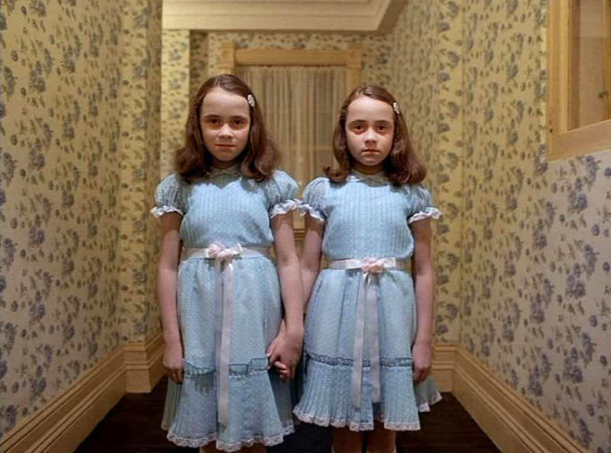
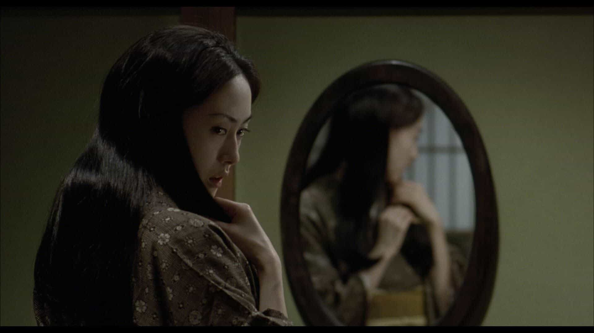

Michael is the author of Staying Married in a Degenerate Age. Follow him on Twitter or Facebook. You can read more of his writing at Honor and Daring.


The Halloween season is a great time to curl up with your girl to watch a horror movie. But there is nothing worse than watch a horror movie that turns out to be a complete dud like Paranormal Activity. Here is a guide to some of the best horror flicks to ensure you don’t waste a dark stormy night.
A present for Damien
The Omen is story of the birth and childhood of the antichrist. The antichrist, named Damien Thorn in the movie, is the devil’s literal son. While that is terrible theology, it doesn’t stop the movie from being highly disturbing. For me, the most shocking scene is when Damien’s nanny hangs herself as a willing sacrifice at his fifth birthday party. I will give an honorable mention to The Exorcist here as another movie that has the devil as the main protagonist, but I feel the special effects are pretty campy by today’s standards.

Horror, like science fiction and fantasy, is a despised genre. Actors and directors would prefer to do “serious” works about AIDS, cancer, or mental illness. For this reason, horror movies are typically low-budget affairs starring no-name actors and directed by men who will never receive an Academy Award nomination. The Shining was an exception to this rule. It was directed by Stanley Kubrick, who already had several Oscars to his name, and it starred Jack Nicolson, another Oscar winner. And the screenplay was based on a novel by one of the masters of the horror genre, Stephen King.
The Shining is a ghost story set in a hotel that caters to the very rich nestled in the Colorado Rocky Mountains. Due to the harsh winters in the mountains, the hotel shuts down in the Fall leaving only a caretaker to maintain it. The caretaker is a writer named Jack Torrence who jumps at the chance to spend the winter with his wife and young son in a hotel doing almost nothing but writing. Of course, Jack gets more than he bargained for as the hotel is haunted by the evil that has accumulated from the shocking immorality that occurred in the hotel over the years.
The suspense in the movie is heightened by the fact that Jack Torrence is also an alcoholic. The viewer is never 100% sure whether the events unfolding at the hotel are caused by ghosts or by Jack himself. Kubrick does a masterful job of creating a foreboding atmosphere and the actual encounters with the ghosts are brief. Nicholson is brilliant as the tortured artist who is slipping into madness.
Out of all the movies in this article, The Shining is the only one that I watch almost annually. Even though I have the movie practically memorized, I still get sucked into the disturbing atmosphere of the movie.
A Nightmare on Elm Street falls firmly within the slasher genre: Teenagers are pursued by the villain, Freddy Krueger. But director Wes Craven injects the supernatural into the movie. Freddy Krueger is dead and the way he kills his victim is through their dreams. If the victim dies in his dream, he dies in real life. The teenagers quickly learn that the only way they can survive is by not going to sleep. Of course, it is not possible for one to stay awake forever so the teens find themselves being picked off by Freddy.
In the movie, the viewer is never 100% sure whether he is watching reality or if it is a dream so he is constantly off-balance. And while many horror movies rely on recycled monsters (vampires, werewolves, ghosts, etc.) A Nightmare on Elm Street introduces a truly memorable villain in Freddy Krueger. His burnt skin and trademark glove with blades on the fingertips make him one of the most easily recognizable film villains.
Some horror movies rely on pure creepiness instead of trying to surprise the viewer. Hellraiser falls into this category. The story involves a magical box that, when opened, is supposed to give the possessor of it untold wealth, power, and pleasure. When a man opens the box, it instead summons a demon that take his body and soul to hell.
The man’s mistress (his brother’s wife) starts having one-night stands with random men, and sacrificing them to bring back her paramour. She is successful, but there’s a catch—her boyfriend has come back without skin. He proceeds to kill his brother and steal his skin.
Hellraiser is disturbing from beginning to end. This is no feel-good movie. It is best watched alone very late at night.

Ringu is a Japanese movie. There is an American version of the movie starring Naomi Watts called The Ring. For whatever reason, the Japanese version is infinitely scarier. The plot involves teens (it’s always teens) who watch a video they find in a vacation cabin. The teens all end up dying with looks of horror on their face. The heroine is a journalist who tries to figure out the mystery. In the process she watches the video herself. After watching the video she receives an ominous phone call. She realizes that anyone who watches the video is doomed to die after a certain number of days.
Disturbed, the journalist enlists the help of her ex-husband, who seems to have some latent extrasensory perception ability. Together they figure out that the video has some connection to a female psychic and her disfigured daughter. The rest of the movie is spent trying to figure out how to escape the curse of the video.
Ringu relies on a creating a foreboding atmosphere and the element of surprise. If you don’t already know the surprise, you’ll definitely enjoy Ringu.
You may have noticed that most of the movies I mentioned are from the 1980s. I believe that the horror movies from that period are more enjoyable because they have a supernatural element, whether that is a demon, a ghost, or someone who has returned from the dead. In contrast, the more recent movies in the horror genre tend to lack any reference to the paranormal. Instead, their subject matter involves people being tortured and killed by flesh and blood people. Movies like Saw, The Strangers, The Invitation, and Hush all involve random, gratuitous violence.
I would argue that the disappearance of supernatural horror in movies is a good barometer for the state of religious belief in the West. As more people lose their faith, all that is left is random violence.
Of course there are many other movies that I could mention, but space does not permit. I’d be interested to hear your suggestions for other high quality horror movies in the comments.
Read More: 4 Underappreciated Horror Movies